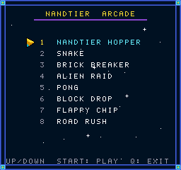
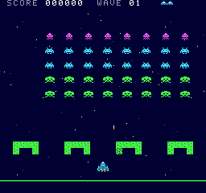

That page does not exist. Here is the NandTier home page.
RISC-V · FPGA · OPEN SOURCE
A RISC-V computer you can read, build and play
NandTier is an open-source RISC-V system-on-chip for small FPGA boards. It has its own RV32IM CPU, a boot ROM, execute-in-place SPI flash, an HDMI picture processor, an SD card and eight games, and it fits on a $25 Sipeed Tang Nano 9K. Everything is written in readable Verilog and C, and builds with open-source tools from one make.


What NandTier is
| CPU | RV32IM, multi-cycle, written from scratch: hardware multiply and divide, cycle and instruction counters |
| Memory | 8 MiB SPI flash, execute in place, with a 4 KiB read cache; 8 KiB SRAM; 8 KiB boot RAM |
| Video | 640x480 HDMI (DVI), an NES-style picture processing unit (tiles, sprites, scrolling) and an 80x25 text terminal |
| I/O | UART at 115200 baud, GPIO with 6 LEDs, SD card over SPI, an on-chip logic analyzer |
| Boards | Sipeed Tang Nano 9K (Gowin GW1NR-9C), Sipeed Tang Nano 20K (GW2AR-18C), Radiona ULX3S (Lattice ECP5) |
| Tools | Yosys, nextpnr, Apicula, openFPGALoader, Icarus Verilog, RISC-V GCC: all open source, installed by one script |
| License | Apache 2.0 |
Who it is for
- Students who built a single-cycle RISC-V core and want to know what comes next: a bus, a boot ROM, flash, video, and software that runs on it.
- Teachers who need a complete, tested system that runs on a cheap board, with an offline installer for a whole lab.
- Makers who want to write their own games for their own computer.
Read the documentation
- Getting started: install the tools, build, load the board, play.
- RISC-V on the Tang Nano 9K: boards, pins, clocks and programming.
- SoC architecture: the bus, the address map and the FPGA resources.
- The RV32IM CPU core: stages, timing and what is supported.
- Boot ROM and XIP flash: from reset to your own firmware in the flash.
- HDMI and the picture processor: tiles, sprites and the text terminal.
- Games and the game SDK: play the eight games, or write your own.
- Open-source FPGA toolchain: Yosys, nextpnr and Apicula for Gowin FPGAs.
- Comparison with PicoRV32, NEORV32, VexRiscv and picotiny.
- FAQ